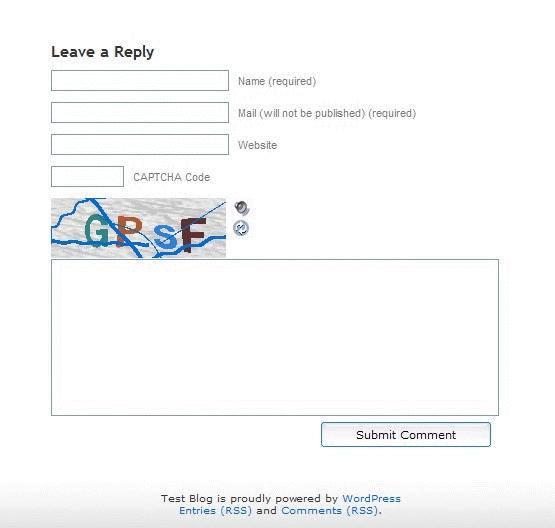
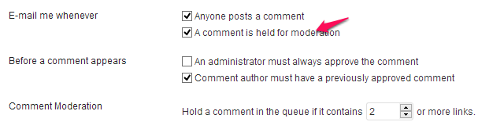

Are you tired of getting Spam comments and wanna add captcha to WordPress comment form? Here is the perfect solution for that. In this guide, we shared 5 free and most downloaded WordPress captcha plugins, which adds an extra level of security to your blog and keep it safe from spam.
Image Credit: http://www.flickr.com/
What is Captcha?
The full form of captcha is Completely Automated Public Turing test to tell Computers and Humans Apart. This is basically a challenge to differentiate human and a computer software. A CAPTCHA should be solved by human only, software/computer program/ bots would find it impossible to solve. This is how it looks once enabled on the blog.

List of Free plugins for adding Captcha in WordPress comment form
- SI Captcha Anti Spam 1,706,295 Downloads
- Captcha WordPress plugin 1,092,808 Downloads
- WP Captcha free 107,976 Downloads
- WP re-Captcha 441,949 Downloads
- Conditional Captcha for WordPress 107,648 Downloads
Choose any one of the above plugin, install and activate it on your website. Testing is more important than just installing these plugins. Try to test few scenarios after implementing them on your blog to see everything is working fine as expected. The above mentioned plugins not only adds captchas in comments, they also adds captcha in WordPress login, forgot password screen etc.
Note: Once you have captcha enabled on your blog, the number of spam comments you get would be less. But, you have to take care few more things – Captchas are good for blocking automated comments, which are generated by bots or software, however it doesn’t mean that a human cannot leave a spam comment.
Even if you have setup CAPTCHA perfectly on your blog, the spam comments you get would not be totally removed, the number would significantly go down but still you have to read the comment before approving them, it’s because there are peoples out there who just leave comments for the sake of link building, without even reading what the content is all about. Make sure to have the below settings in Settings » Discussion Section in WordPress dashboard. This way a comment would be held for moderation until unless the visitor has a previously approved comment and you would get a comment notification via email.

You may want to read below articles –
- http://googlewebmastercentral.blogspot.in/2009/11/hard-facts-about-comment-spam.html
- http://glipho.com/roger/some-funny-spam-comments
- http://www.zdnet.com/blog/seo/spamgrish-20-of-the-funniest-spam-comments-ever/293
- http://googlewebmastercentral.blogspot.in/2008/09/keeping-comment-spam-off-your-site-and.html
- https://support.google.com/webmasters/answer/81749?hl=en – User Generated Spam.
Let me know which plugin or method, you prefer for keeping your blog safe from spam and unwanted comments. Do let me know your thoughts via comments.
Through this plugin http://buffercode.com/simple-captcha-for-wordpress/ users can select wide variety of methods to display the captcha
1. Sorting in increasing or decreasing order
2. Entering biggest or smallest number
3. Selecting Am or Am Not Spammer using combo box
4. Entering the alphabets
5. Addition or Subtraction
Thanks for this helpful discussion. I came across it while goggling as I just migrated from blogger to wordpress and guess what. a site as been terrorizing me with kinds of comment that got me pissedoff and so, I decided to search out solution.
Just yesterday I went through 26 comments and less than 8 was meaningful and approveable, others were total junks and I turned them to spam and got them deleted instantly.
will try out these plugins and see if it works well as said.
Olasunkanmi Ayomide Fakeye
need captcha work online and request you to send details to be done from my side. any investement or other charges please mention and send through e mail. send your contact number, name and place also.
Dear Suresh, This article is about having a captcha plugin on WordPress blog. I didn’t get what are you trying to say.
So what makes them the best? Because they got a lot of downloads? Not evident why you picked these five. ??????????
Actually Doug, it is quite clear.
In the first paragraph of this blog it says “we shared 5 free and most downloaded WordPress captcha plugins”
NOTE – most downloaded is the primary reason CHAITANYA posted these choices.